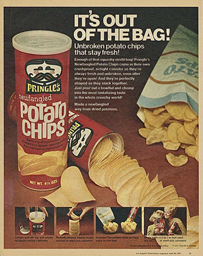

Pringles: A Combinação Perfeita de Sabor e Inovação
Quando se trata de snacks irresistíveis, poucos produtos conquistaram o paladar global com a mesma intensidade que as famosas batatas Pringles. Com sua forma única, sabor autêntico e embalagem icônica, as Pringles se destacam como um exemplo notável de inovação no mundo dos alimentos.
A Origem e Evolução das Pringles:
As Pringles foram introduzidas no mercado pela primeira vez pela Procter & Gamble em 1967, nos Estados Unidos. A concepção por trás desse produto revolucionário era criar uma batata chip uniforme em formato e sabor, em contraste com as irregularidades frequentemente encontradas em chips tradicionais. A forma de "swoops" (curva) das Pringles permitiu que fossem empilhadas em um tubo cilíndrico, maximizando o espaço na embalagem e minimizando a quebra das batatas durante o transporte.
A inovação das Pringles não se limitou apenas à sua forma e embalagem, mas também à sua composição. Ao contrário de muitas batatas chips convencionais, as Pringles são feitas a partir de uma mistura de batata desidratada, farinha de arroz, farinha de milho e amido de trigo. Essa mistura é então prensada em sua icônica forma curvada e assada em alta temperatura para criar a textura crocante e o sabor característico das Pringles.
A Variedade de Sabores:
Uma das razões pelas quais as Pringles conquistaram uma base de fãs tão leal é a impressionante variedade de sabores disponíveis. Desde os clássicos como "Original" e "Sour Cream & Onion" até opções ousadas como "Spicy Sriracha" e "Pizza", a Pringles oferece uma ampla gama de sabores para atender a todos os paladares. Essa diversidade de sabores tem sido um fator-chave para manter a relevância das Pringles ao longo dos anos.
O Apelo Global das Pringles:
A popularidade das Pringles ultrapassou fronteiras geográficas e culturais. Sua embalagem prática, que mantém as batatas chips inteiras e crocantes, tornou-as um lanche preferido para viagens, lanches escolares e reuniões sociais. A marca também abraçou a cultura pop e colaborou com várias campanhas publicitárias criativas ao longo dos anos, ajudando a manter as Pringles na mente dos consumidores.
Conclusão:
As Pringles são mais do que simplesmente batatas chips; são uma representação do poder da inovação alimentar e da capacidade de uma marca se adaptar e prosperar ao longo do tempo. Sua forma distinta, variedade de sabores e apelo global as tornam um ícone na indústria de snacks. Quer seja para satisfazer um desejo súbito por algo crocante e saboroso ou para compartilhar momentos especiais com amigos e familiares, as Pringles continuam a ser uma escolha popular que transcende gerações.
